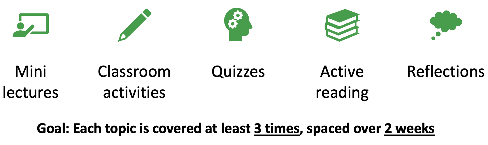

Associate Teaching Professor
Carnegie Mellon University
Ever had a bad experience with a group project in school? Me too. But given that software engineering is inherently social, a group project is necessary to cover the fundamentals.
"Software engineering is what happens to programming when you add time and other programmers." —Russ Cox
I've now taught 8 software engineering courses that involved a sizable group project. When designing my very first one in 2018, I looked at 50+ other software engineering courses as examples to pick and choose ideas from. Most of them have a similar structure: lectures on textbook software engineering topics (e.g., process and testing), some small individual assignments, and a group project where students adhere to an Agile-like process.
How would you design that project?
So what do we actually want students to get out of an SE course? The boring goal is for students to have exposure to a breadth of software engineering topics. The next level is for students to have experience applying some of those concepts to a project. (Also, many departments use such a course as a dumping group for accreditdation requirements, such as ABET's soft skills requirement.)
My goal is for students to have experience using "modern" tools in as "real world" of a setting that we can possibly emulate in a course, giving them a significant project for their portfolio.
I've actually had some pushback on this by faculty who say that our goal as academics shouldn't be to prepare students to get a job but rather provide some unique knowledge they wouldn't otherwise get. "We aren't a trade school!", one of them said.
This is the high-level architecture of how I think of a software engineering project. There is some getting started experience to ramp students up on whatever background they need based on some motivation to get their attention. They form a team and apply a process in a series of iterations, including user stories, code reviews, and testing. They use a set of tools, like git, GitHub, JavaScript, Electron, or whatever it may be that semester.
They get feedback from TAs, grades, and each other. Along the way, they listen to lectures and complete other assignments on topics that they can apply to their projects.
There are a million different ways one could implement these high-level concepts.
Project topic: There is an art to coming up with a good project idea. I generally want these students to work on something that involves a user interface, has some external data or dependency, can be described in a sentence, but can also be extended endlessly. For example, a desktop YouTube client or an app for managing your smart lightbulbs at home.
I've let students come up with their own projects, I've had all the teams do the same core project. I've had teams select from a small set of options. I've had teams extend open source projects. There are pros and cons of all of them. I did struggle a bit with a number of students that just want to be told exactly what to do.
Teams: Another art is how to select teams. I've also tried a number of approaches: letting them self organize, random selection, and a match-making survey. My favorite is actually letting them pair up and then randomly pairing two pairs together. Four to a team is my ideal. Fewer members avoids the team complexities and more becomes unmanageable.
Grades and feedback: It is hard to give good feedback. You could grade the project outcomes, individual contributions, code quality, adherence to the process, and knowledge of the concepts. Students really dislike the ambiguity of a group project rubric and subjective grading. Perhaps the most meaningful lesson in such a course is that there is no "right" answer and that figuring out what to do next is a challenge that will always exist. I have found that the best feedback mechanism is for each team to meet with a TA every week or two to review progress and get help.
Process: Courses have optimized students to be deadline driven. This is a friction point for a course that tries to teach iterative and incremental development where you are dependent on teammates to make progress. Students try to binge commit their contributions on the last day or two of a two-week sprint, at least for the first ones. I use GitHub artifacts (i.e., issues, code reviews, commits, and documentation) to measure how individuals are following the process.
Scaffolding: So what do you do with all the class time if everything revolves around a project? I like to do small lectures covering core software engineering concepts, how to apply them, and in-class activities to try it out before integrating it into the project. It helps to cover concept from a variety of angles: lecture, solo activity, reading, and project. Alternatively, my PhD advisor would run a "bootcamp" for the first few weeks of class to get everyone up to speed on the programming language, the web framework, and git. This can really help with the problem of having a wide range of backgrounds.
There are many challenges of running a course like this. Giving detailed grades and feedback is a huge timesink. Students have all sorts of backgrounds and skill levels. Students are deadline driven which often doesn't play well with Agile. A good TA is worth their weight in gold.
I've tried some things that really didn't go well. I once listened to student feedback too much and made classtime be predominately activities. It worked with one cohort but the next semester it really backfired.
There is also a delicate balance between how much freedom you give teams versus how much structure you apply to them. And there isn't a right answer, it really depends on the team. Some students/teams thrive with absolute freedom and will go above and beyond your expectations if you don't limit them. Others will thrive with a consistent feedback loop.
There is a neat concept called the contributing student pedagogy (see more in this paper) which argues that students are more motivated to learn if they can contribute to the class and other students' learning. I really liked it and tried to apply it to my courses, letting students propose changes to assignments, give small lectures/demos, and contribute notes to the course. However, it quickly fell apart for me after my first semester when my courses started growing dramatically. How can 110 students have an opportunity to contribute meaningfully? How do I review their contributions? Are they only doing it when I give an extra credit incentive?
I still really like the idea but I don't know how to apply it at scale and without incentives getting in the way. I'd like to try it again for very small courses where I can let it happen organically.
There are many other designs to such courses that I haven't tried yet. Some like to have a role for each student that changes each sprint, such as being the customer or the team lead. Others have students swap to other teams throughout, to experience onboarding and living with someone else's code decisions. Some make use of a flipped classroom, where students work in class and follow lecture material at home on their own time. Capstones and senior project courses make use of industry mentors to elicit projects from.
Software engineering courses are a lot of fun to teach. I'm always looking for new things to try, so please let me know your ideas.
You may be interested in these other posts: